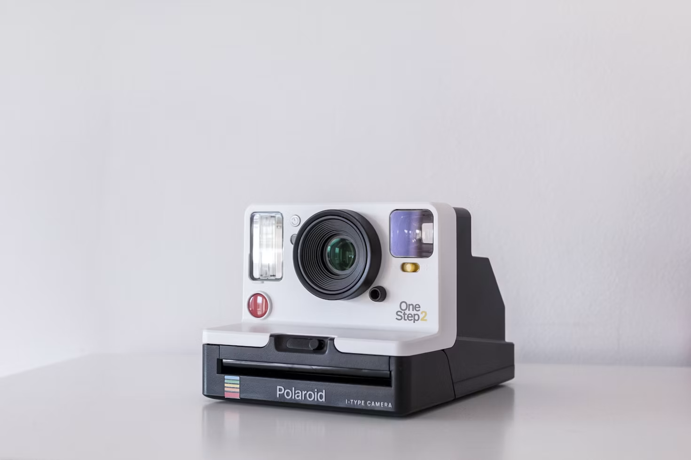
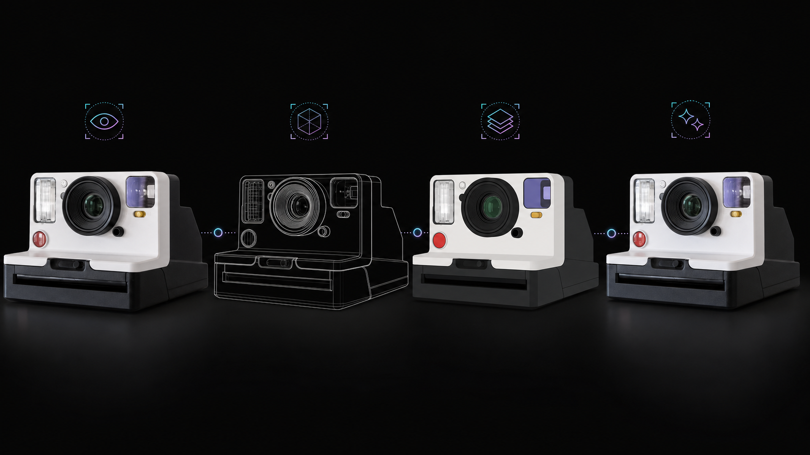
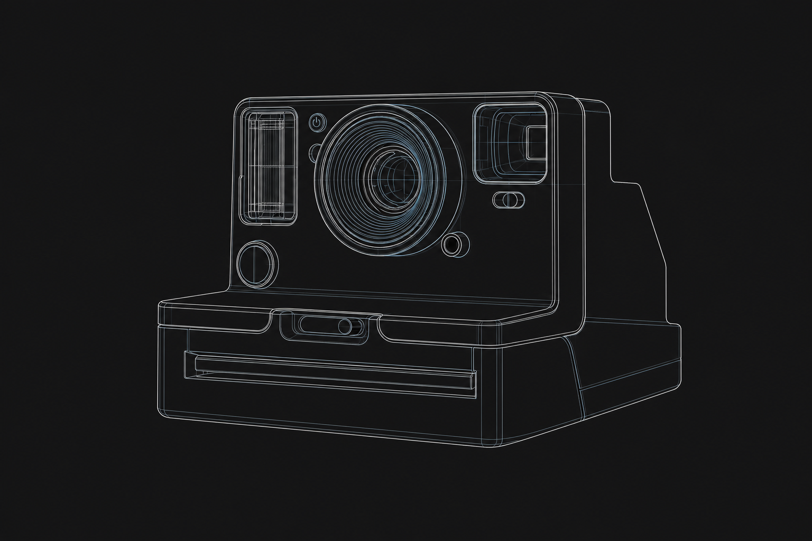
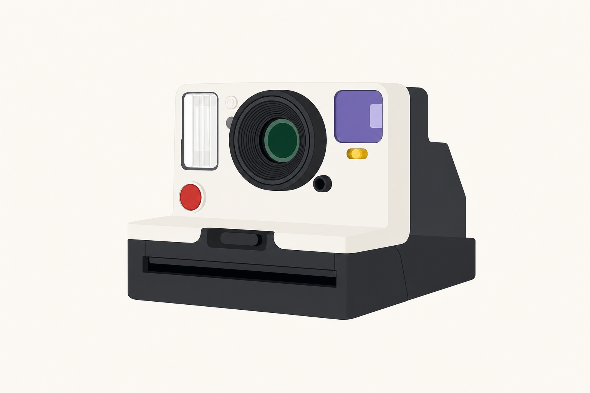
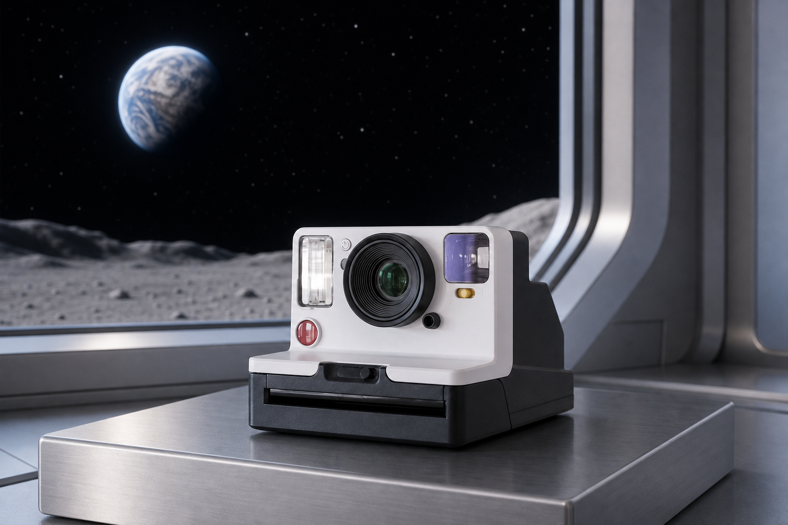
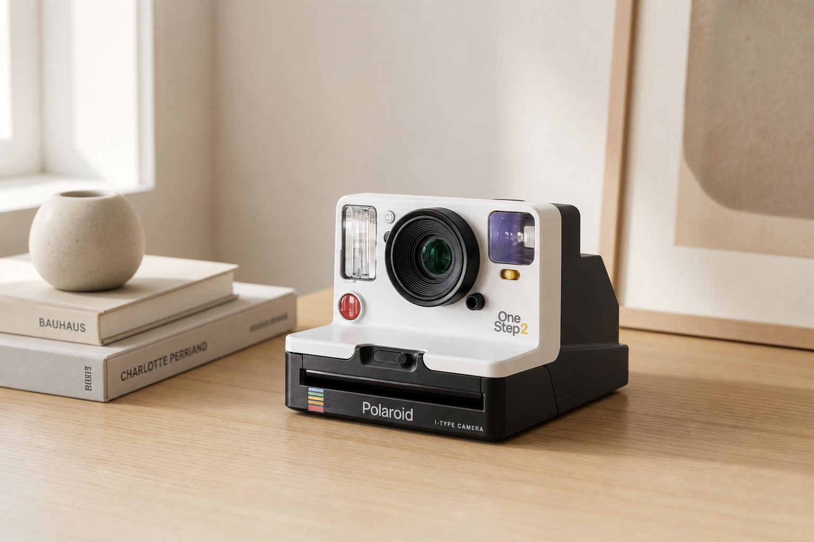
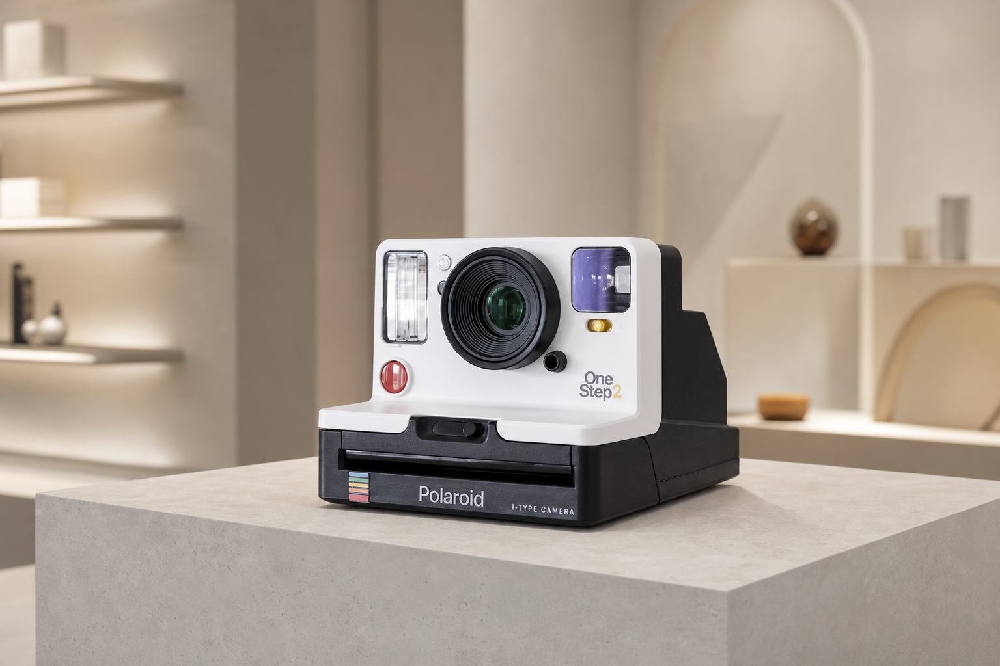
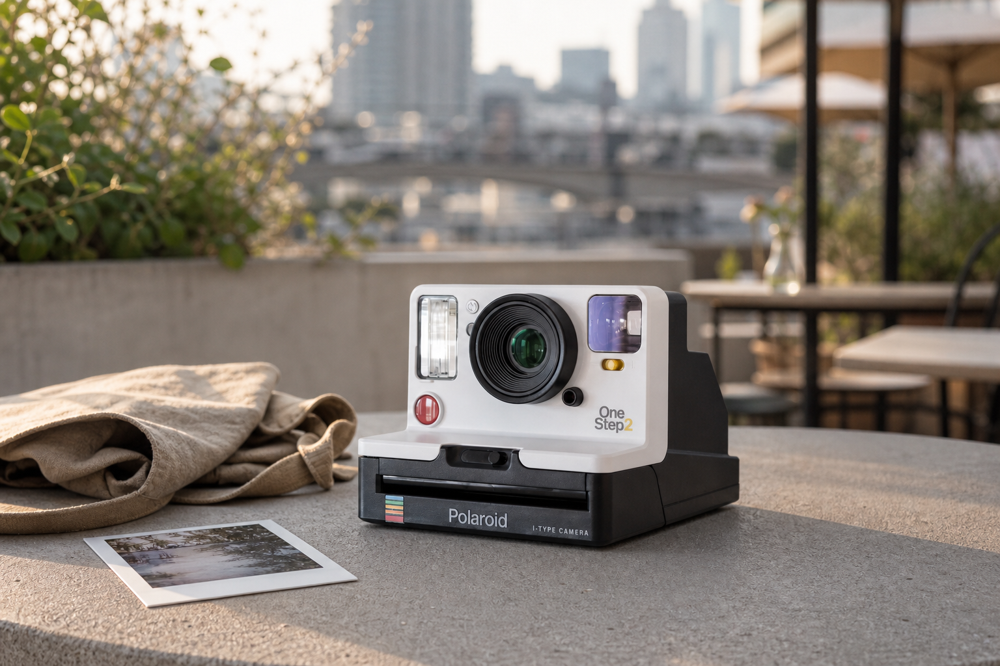
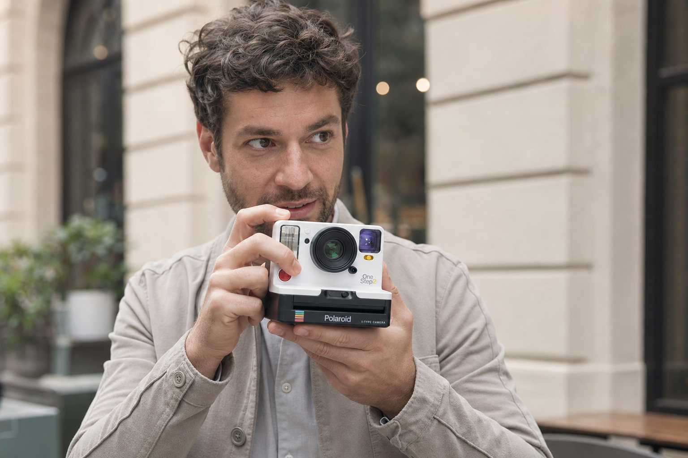

Product DNA
Structure, proportions, color, material, functional parts, silhouette, and identifying features. Real products must remain fixed.
AI Visual Reverse Engineering
Why Reverse Engineering?
VISUAL SYSTEM / NOT HARDWAREThis is visual and prompt reverse engineering—not camera hardware teardown. It extracts structure, materials, lighting, angles, and prompt constraints.
Convert a good-looking image into a clear formula for composition, material, light, and hierarchy.
Reuse the same visual system across furniture, technology, e-commerce, ads, and landing pages.
Lock shape, proportions, and controls while allowing background, lighting, and presentation to change.
Turn one image into analysis, line art, color rules, material notes, prompts, and reusable templates.
Demo-N Visual DNA Model
Do not describe the whole image at once. Separate what defines the product from what can be transferred, replaced, or upgraded.
Structure, proportions, color, material, functional parts, silhouette, and identifying features. Real products must remain fixed.
Camera distance, viewpoint, placement, frame coverage, negative space, perspective, visual focus, and presentation method.
Environment, floor, background, props, architecture, and atmosphere. This is the easiest layer to replace.
Lighting, photography, color mood, material response, depth of field, clarity, and commercial or cinematic finish.
My Method & Philosophy
The method separates a complex image into visual language, structure, color, and material before recombining them. Each stage solves one problem, making the final output easier to direct and evaluate.

Composition, silhouette, proportion, and spatial relationships are defined before texture and visual polish.
Visible facts are separated from assumptions so prompts remain grounded in the source image.
Clear requirements for form, color, material, camera, and exclusions reduce random variation.
AI accelerates analysis and iteration, while final accuracy, usability, and ethics remain human decisions.
How To Use It
The stages can be used independently, but the full sequence provides stronger control when an image must be studied, simplified, and rebuilt.
Confirm the subject, intended output, image quality, important details, and elements that must remain unchanged.
Extract the core theme, composition, style, material, atmosphere, camera, and viewing angle as structured language.
Remove color and lighting distractions to study contours, internal divisions, proportion, and spatial logic.
Assign clean local colors to independent regions, strengthening hue and value separation without texture noise.
Combine the approved structure and palette with specific craft, material, lighting, lens, and quality terms.
Compare structure, color, material, edge quality, and practical usability; revise only the failed dimension.
Case 02 / Instant Camera
The camera case applies the same method to an industrial product: lock the product identity first, then change only the representation layer from observation to structure, color, and final material.


Independent Stage Images
The composite explains the workflow at a glance. These individual images make structure, color, and environment changes easier to compare against the original.







The off-white shell, black base, lens diameter, flash, violet viewfinder, colored controls, and stepped side housing stay consistent.
The neutral studio becomes a lunar observation station with Earth, a moon horizon, window framing, and a brushed-metal platform.
Cool orbital light and a restrained warm rim light reveal the matte polymer, lens glass, translucent plastic, and metal surface.
The space environment shifts the camera from a catalog object to an aspirational technology campaign without redesigning the product.
Read the camera as evidence: off-white upper shell, black film base, central lens, left flash, violet viewfinder, colored controls, and a stepped side profile.
Reduce the product to silhouette, lens rings, modular front controls, body divisions, base geometry, and perspective without material distraction.
Assign clean local colors to each region so the off-white body, dark base, lens, viewfinder, and small accents remain visually separated.
Restore matte polymer, glossy lens glass, translucent plastic, controlled reflections, soft shadows, and premium product-lighting depth.
Identity Lock
Body proportions, lens diameter, flash and viewfinder placement, black base height, control locations, viewing angle, and the stepped right-side housing.
Variable Layer
Rendering mode, edge treatment, texture detail, light response, background tone, and the amount of visual simplification at each stage.
Prompt Logic
Product geometry is repeated as a constraint in every stage. Only one visual dimension changes at a time, reducing uncontrolled redesign.
Human Review
Small controls, lens-ring count, transparent parts, edge continuity, brand text, and exact proportions require comparison with the source image.
Defines the product category and primary object.
Locks silhouette, proportions, and component placement.
Preserves the main color relationship and small accents.
Guides surface roughness, transparency, and reflections.
Maintains perspective and visible depth across stages.
Prevents added controls, altered geometry, or inconsistent scale.